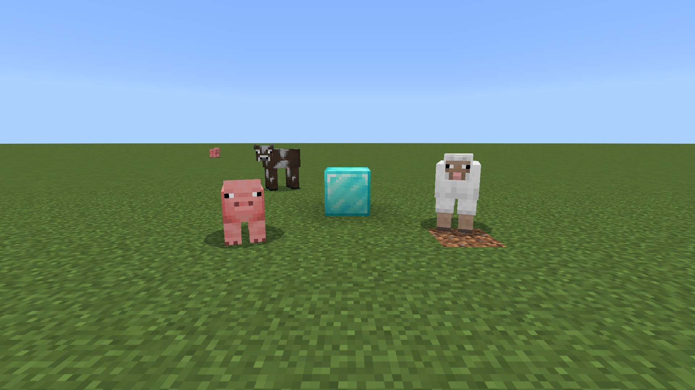

{ "ok": true, "method": "snapshot", "data": {
"player": { "name": "Steve",
"location": {"x":300.5,"y":-60,"z":298.5},
"rotation": {"pitch":10.0,"yaw":0.0}, … },
"target": { "block": {
"position": {"x":300,"y":-60,"z":305},
"block": {"typeId":"minecraft:diamond_block"
… } } },
"entities": { "radius": 12, "entities": [
{"typeId":"minecraft:pig","distance":5.41},
{"typeId":"minecraft:sheep","distance":6.07},
{"typeId":"minecraft:cow","distance":10.75} ]
} } }